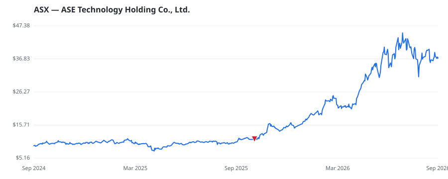

bullish · bearish · n/a — dots: price>SMA10 · SMA10>SMA50 · SMA50>SMA200 · up>down volume (20d)
Other · large cap

ASE Technology Holding Co Ltd is a semiconductor assembly and testing firm. The company operates in segments: Packaging, Testing, Electronic Manufacturing Services and others. Of these, Packaging segment contribute the maximum revenue. The packaging segment involves packaging bare semiconductors into completed semiconductors with improved electrical and thermal characteristics. The Testing Segment includes front-end engineering testing, wafer probing, and final testing services. In the EMS segment, the company designs manufactures, and sells electronic components and telecommunication equipmen · website